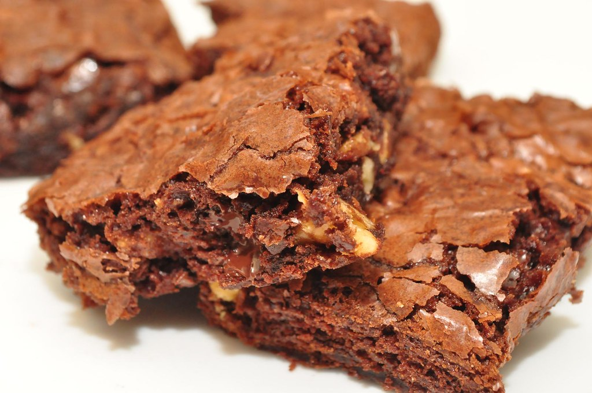

Brownie Mix
Chocolate.

Ingredients
For the mix
- 285 g powdered sugar
- 85 g finely chopped dark chocolate
- 63 g all-purpose flour
- 63 g cocoa powder
- 30 g malted milk powder
- 1.25 tsp salt
- 0.75 tsp espresso powder
- 50 g refined coconut oil (should be solid, but creamy)
For the brownies
- 0.25 cup water
- 2 large eggs
- 1.5 tsp vanilla extract
Steps
For the mix
- Combine all ingredients except coconut oil in a food processor.
- Grind until the chocolate disappears into a fine, powdery mix, and there a no longer any chunks in the bowl.
- Add the coconut oil and pulse until combined.
- Transfer the mix to an airtight contianter and store at cool room temperature up to a year.
For the brownies
- Place oven rack in lower-middle position and preheat to 180 C
- Add water, eggs and vanilla extract to the mix and stir to well-combined.
- Scrape into prepared pan and bake until brownies are glossy, puffed and firm, but still squishy.
- Baking time is approx. 35 minutes, but varies strongly by pan.
- Allow brownies to cool at least 15 minutes before serving.